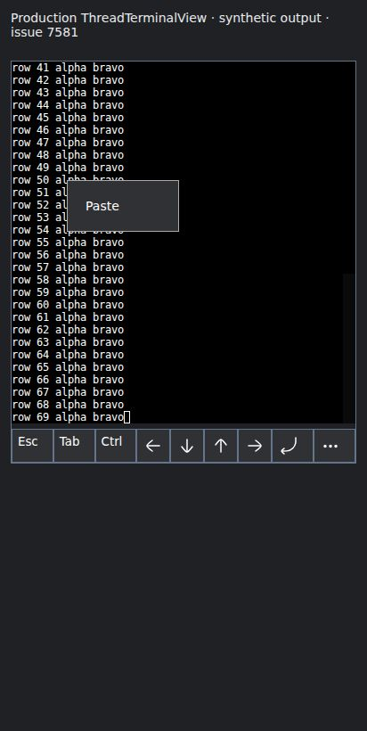
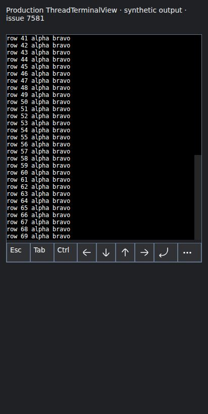
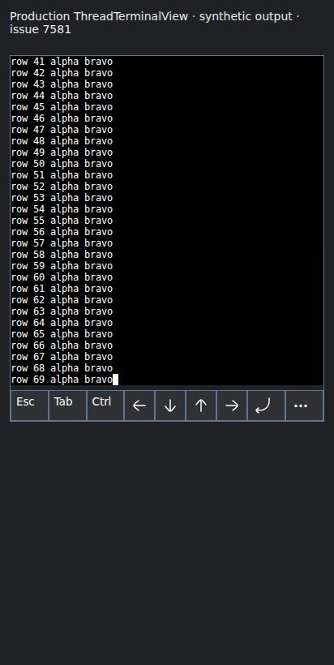

#7581 · Terminal touch gestures scroll without selecting text
Trusted base: da3e60b81d560e114a2bec724bb59c997aaaae7f (origin/main). Repository visibility: public.
Verdict: REPRODUCED · Root-cause confidence: high · Reproduction label: confirmed-repro
1. TL;DR
The production terminal frontend does not create a text selection from touch hold-and-drag. In two separately built checkouts, a 500 ms hold left both terminal and native selection empty, dragging scrolled the terminal, and a 900 ms hold opened a menu containing only Paste. A mouse double-click on the same output selected alpha, ruling out an unusable terminal or missing text. The terminal implements tap-to-focus and xterm scrolling, but has no touch selection controller. This is a real production-component browser reproduction with synthetic output, not a physical Android or full server/PTY end-to-end verification.
2. Claims vs findings
| Claim | Status | Evidence |
|---|---|---|
| Holding terminal output does not select a word. | Verified in emulated Chromium touch | 500 ms and 900 ms holds: both selections empty; touch events trusted and defaultPrevented. |
| Dragging scrolls instead of extending selection. | Verified | 96 px downward drag moves viewportY from 41 to 34; selection remains empty. |
| The long-hold menu contains only Paste. | Verified for plain output | 900 ms hold yields menu: ["Paste"]. This does not claim link output has no link actions. |
| The context menu has a roughly 700 ms hold timer. | Verified in installed dependency source | Radix ContextMenuTrigger schedules its touch/pen open with 700 ms; the browser sample checks before and after, not an exact timer benchmark. |
| All touch devices and the Android native app fail identically. | Not fully verified | No physical Android, native mobile shell, iOS Safari, pen, or hybrid-device test. The common production frontend path is affected in emulated touch Chrome. |
| Copy-on-select or clipboard shortcuts could initiate touch selection. | Refuted as a root-cause fix | They consume terminal.getSelection(); they cannot supply the missing selection gesture. The default-off setting was used in this fixture. |
3. Environment
- Source/build host: Linux x86_64, Node 22.19.0, pnpm 9.15.0. Both checkouts:
da3e60b81d560e114a2bec724bb59c997aaaae7f. - Browser: headless Chrome 149.0.7827.55 through BB Browser Automation, 412 × 820, deviceScaleFactor 1, isMobile=true, hasTouch=true, maxTouchPoints=1, pointer:coarse=true.
- Actual production
ThreadTerminalView, xterm 6.1.0-beta.292, its addons, shared context menu, and timeline selection menu. Pinned xterm dependency. - The fixture replaces unrelated transport/settings/theme/commands/URL-opening/notification boundaries; it does not replace input handlers, selection, rendering, or menus. Output is 70 generated lines, not an issue-supplied command. No real agent/provider, shell session, or user runtime data is used.
- The primary and second fixture output directories were
fixture-firstandfixture-second, loaded from separate temporary files on the browser host. No HTTP ports or application data stores are needed for the final reproduction. - An initial isolated dev-app setup was stopped and its share revoked; the remote headless browser could not access that app without account authentication, so it was not used as evidence.
4. Minimal reproduction
The complete copy-paste build and browser commands are in repro/README.md. The builder bundles only trusted production source and the explicitly described fixture boundaries. No linked pull-request branch or code was run.
- Check out the trusted base, install with
pnpm install --frozen-lockfile --prefer-offline, then build the SDK and repository with Turbo. - Run
node /path/to/build-fixture.mjs "$PWD" /tmp/bb-7581-first. Transferfixture.htmlto the selected browser host and open it in an isolated headless BB Browser Automation session. - Set a 412 × 820 mobile/touch viewport before navigation. Wait for
fixtureReady. The terminal fits to 53 columns and 29 rows. - Run touch-regression.js. It holds on the word alpha for 500 ms, drags, then separately holds 900 ms and checks mouse selection.
Expected: a touch hold selects alpha; drag extends that selection. Actual, both runs: shortHold.selection = ""; drag.selection = ""; viewportY: 41 → 34; longHold.menu = ["Paste"]; mouseControl.selection = "alpha". Error: Expected touch hold and drag to select terminal text; selection remains empty


Exact browser regression script
const page = await browser.getPage('terminal-repro');
const client = await page.createCDPSession();
const pause = milliseconds => new Promise(resolve => setTimeout(resolve, milliseconds));
await page.waitForFunction(() => globalThis.fixtureReady === true);
await page.evaluate(() => {
globalThis.touchObservations = [];
document.addEventListener('touchstart', event => {
touchObservations.push({type: event.type, defaultPrevented: event.defaultPrevented, trusted: event.isTrusted});
}, {passive: true});
});
const point = await page.evaluate(() => {
const bounds = document.querySelector('.xterm-screen').getBoundingClientRect();
return {x: bounds.left + bounds.width / terminal.cols * 8.5, y: bounds.top + bounds.height / terminal.rows * 9.5};
});
const sample = () => page.evaluate(() => ({
selection: terminal.getSelection(),
nativeSelection: getSelection()?.toString() ?? '',
viewportY: terminal.buffer.active.viewportY,
menu: [...document.querySelectorAll('[role=menuitem]')].map(element => element.textContent),
}));
const result = {environment: await page.evaluate(() => ({
maxTouchPoints: navigator.maxTouchPoints,
coarsePointer: matchMedia('(pointer: coarse)').matches,
rows: terminal.rows, cols: terminal.cols,
})), initial: await sample()};
await page.shot({type: 'jpeg', maxEdge: 960, quality: 80});
await client.send('Input.dispatchTouchEvent', {type: 'touchStart', touchPoints: [point]});
await pause(500);
result.shortHold = await sample();
await page.shot({type: 'jpeg', maxEdge: 960, quality: 80});
for (let step = 1; step <= 8; step++) {
await client.send('Input.dispatchTouchEvent', {type: 'touchMove', touchPoints: [{x: point.x, y: point.y + step * 12}]});
await pause(40);
}
await client.send('Input.dispatchTouchEvent', {type: 'touchEnd', touchPoints: []});
await pause(300);
result.drag = await sample();
await page.evaluate(() => terminal.scrollToBottom());
await pause(200);
await client.send('Input.dispatchTouchEvent', {type: 'touchStart', touchPoints: [point]});
await pause(900);
result.longHold = await sample();
await page.shot({type: 'jpeg', maxEdge: 960, quality: 80});
await client.send('Input.dispatchTouchEvent', {type: 'touchEnd', touchPoints: []});
await client.send('Input.dispatchKeyEvent', {type: 'keyDown', key: 'Escape', code: 'Escape', windowsVirtualKeyCode: 27});
await client.send('Input.dispatchKeyEvent', {type: 'keyUp', key: 'Escape', code: 'Escape', windowsVirtualKeyCode: 27});
await pause(250);
await client.send('Input.dispatchMouseEvent', {type: 'mousePressed', ...point, button: 'left', clickCount: 2});
await client.send('Input.dispatchMouseEvent', {type: 'mouseReleased', ...point, button: 'left', clickCount: 2});
await pause(250);
result.mouseControl = await sample();
result.touchEvents = await page.evaluate(() => touchObservations);
result.regressionPassed = result.shortHold.selection.length > 0 && result.drag.selection.length > 0;
console.log(JSON.stringify(result, null, 2));
if (!result.regressionPassed) throw new Error('Expected touch hold and drag to select terminal text; selection remains empty');
5. Root cause
The missing owner is touch selection, not clipboard handling. Terminal touch handlers maintain a focus gesture, update it for motion, and focus on release; they never translate a touch into an xterm buffer range. Selection reporting only reads an existing selection:
const text = terminal.getSelection();
The pinned xterm source registers its screen with the gesture layer (src/browser/services/MouseService.ts:99). That layer registers non-passive document touch listeners (src/browser/scrollable/touch.ts:215–217), calls preventDefault() when dispatching a touch start (286–289), and interprets touch movement as gesture scrolling. Its mouse selection hookup remains a mousedown handler (src/browser/CoreBrowserTerminal.ts:618). The recorded touch events were trusted and had defaultPrevented: true; scrolling changed the buffer viewport while selection stayed empty. Thus native fallback selection is suppressed without a touch selection replacement.
The production wrapper leaves Radix ContextMenuTrigger enabled on touch. The installed Radix implementation opens after 700 ms on touch/pen pointer down. The menu renders Copy only when selection text is nonempty, while Paste is unconditional for a running session. That is why the visible result is a Paste-only menu.
The dependency implementation was inspected locally at the exact lockfile-pinned installation. Repository code permalinks above were checked against the recorded trusted commit; no issue-provided URL was fetched.
6. Proposed fix and simple-fix gate
Add a terminal-owned touch selection gesture controller rather than removing xterm prevention globally. It must arbitrate ordinary scroll versus selection, map touches to buffer cells including wide/combining characters and wrapped lines, extend selection with controlled edge scroll, cancel focus/keyboard activation appropriately, and preserve link, context-menu, and terminal mouse-reporting behavior. Reuse the existing selection reporting and Copy/Add-to-chat actions.
No automatic fix PR is safe. This requires decisions about how long-hold selection coexists with long-hold context/link actions and terminal touch behavior, plus platform checks for Android and Safari. That fails the simple-fix condition requiring no product/interaction decision. No production fix, fix branch, push, or fix PR was attempted. A narrow removal of preventDefault would not establish correct xterm buffer selection. The focused browser regression already fails for the intended reason; a future implementation should make it pass and cover gesture cancellation, scrolling, links, and terminal lifecycle.
7. Linked PR review
No open PR linked to #7581 was found in the issue timeline or an open-PR search. Closed, unmerged #7582 was read statically as untrusted data only; its branch, tests, and commands were never executed.
The diff introduces a touch gesture controller and buffer mapping, selection extension, edge scrolling, haptics, and a coarse-pointer effect. This targets the missing selection owner rather than the clipboard symptom. A material interaction finding is ThreadTerminalView.tsx's change to disable ContextMenuTrigger for coarse pointers: that also removes the existing touch link menu unless another access path replaces it. Its added tests primarily cover geometry/range helpers rather than trusted event delivery. This is a static safety limitation, not an execution verdict or evidence that the closed implementation works. The report regression was designed and run from trusted main, not copied from that diff.
8. Verification
The same agent created a second clean detached worktree named clean-main at da3e60b81d560e114a2bec724bb59c997aaaae7f, performed a fresh frozen install, and ran the normal SDK and all-workspace Turbo builds. The fixture was independently rebuilt from that checkout into fixture-second; both generated HTML files had SHA-256 6d28fef40ff759f1d2065255a4a1820bea9fe7b108541e8d5e40e3db3a0b1b31. The second checkout's tracked working tree remained clean.
The second artifact was transferred to a different temporary browser file, then loaded with a fresh terminal instance. Running the same bb browser-automation run SESSION --script-file /path/to/touch-regression.js --script-host SOURCE_HOST --timeout 45s --json reproduced every recorded result, including the mouse positive control and the intended regression failure. No new port or persisted application data directory applies to this file-only frontend fixture. This is repeat verification by the same agent, not independent verification.


Relevant existing tests also pass: pnpm exec turbo run test --filter=@bb/app -- src/components/thread/terminal — 11 files, 101 tests. Both normal all-workspace builds passed after first building the SDK. No report correction was needed after the second touch run. A final fetch showed no subsequent terminal fix on origin/main.
Limits: No physical Android, native app, iOS Safari, or complete server/PTY route was tested. Headless touch emulation establishes the production frontend defect; it does not establish identical behavior on every touch device.
9. Related issues
#1764 tracks the broader mobile terminal touch-selection/copy feature (Feature, Low priority, High effort). #1763 tracks mobile keyboard/paste interaction. Neither issue was modified.
10. Appendix and evidence
- Commands, contract, fixture boundaries, and second-checkout procedure
- Production-component fixture builder
- Focused browser regression
- First verbatim browser test output · Second verbatim browser test output
- First observations · Second observations
First-run output; the second run matches
{
"environment": {
"maxTouchPoints": 1,
"coarsePointer": true,
"rows": 29,
"cols": 53
},
"initial": {
"selection": "",
"nativeSelection": "",
"viewportY": 41,
"menu": []
},
"shortHold": {
"selection": "",
"nativeSelection": "",
"viewportY": 41,
"menu": []
},
"drag": {
"selection": "",
"nativeSelection": "",
"viewportY": 34,
"menu": []
},
"longHold": {
"selection": "",
"nativeSelection": "",
"viewportY": 41,
"menu": [
"Paste"
]
},
"mouseControl": {
"selection": "alpha",
"nativeSelection": "alpha",
"viewportY": 41,
"menu": []
},
"touchEvents": [
{
"type": "touchstart",
"defaultPrevented": true,
"trusted": true
},
{
"type": "touchstart",
"defaultPrevented": true,
"trusted": true
}
],
"regressionPassed": false
}
Error: Expected touch hold and drag to select terminal text; selection remains empty
Issue text and linked PR metadata/diffs were treated as untrusted claims only. No commands, branches, patches, scripts, URLs, or instructions from issue data were executed or fetched. All executed production code came from trusted origin/main; the fixture and reproduction script were authored from repository evidence. Public artifacts contain only synthetic output and sanitized evidence.
Exact commands and fixture contract
# Terminal touch reproduction
This fixture mounts the unchanged production `ThreadTerminalView`, its actual xterm/addons, context menu, touch handlers, and selection menu. It supplies synthetic terminal output and substitutes only unrelated boundaries: transport, system settings, theme, commands, URL opening, and notifications. It does not mock selection, gestures, the terminal renderer, or either menu. No real provider, shell, user database, or credentials are used.
The contract is observable: holding a word and dragging on a touch screen should select terminal text. The credible missing implementation is a touch selection gesture controller. Existing terminal tests cover mouse selection, clipboard, focus, and commands, not trusted browser touch gestures. No production test seam is added; the fixture wraps the existing terminal open method only to observe the mounted instance and write synthetic output.
## Build from trusted main
Save `build-fixture.mjs` and `touch-regression.js` from this report outside the source checkout. Then:
```sh
git clone https://github.com/get-bb/bb.git bb-7581
cd bb-7581
git checkout da3e60b81d560e114a2bec724bb59c997aaaae7f
pnpm install --frozen-lockfile --prefer-offline
pnpm exec turbo run build --filter=@get-bb/plugin-sdk
pnpm exec turbo run build
node /path/to/build-fixture.mjs "$PWD" /tmp/bb-7581-first
```
Building the SDK first avoids the fresh-checkout plugin build ordering failure observed during the initial all-workspace build. No dependency is added.
## Drive with BB Browser Automation
Choose an enrolled host with an existing Chrome installation. Substitute its ID for `BROWSER_HOST` and the returned session ID for `SESSION`. Transfer the fixture if the browser runs on another host:
```sh
bb file write /tmp/slopcop-7581-fixture-first.html --host BROWSER_HOST --stdin --json < /tmp/bb-7581-first/fixture.html
bb browser-automation open --backend local --headless --machine BROWSER_HOST --json
bb browser-automation run SESSION --script 'const page=await browser.getPage("terminal-repro");await page.setViewport({width:412,height:820,isMobile:true,hasTouch:true,deviceScaleFactor:1});await page.goto("file:///tmp/slopcop-7581-fixture-first.html");console.log(await page.snapshot({interactive:true}));' --json
bb browser-automation run SESSION --script-file /path/to/touch-regression.js --script-host SOURCE_HOST --timeout 45s --json
```
`SOURCE_HOST` identifies the host holding the test script; it can differ from the browser host. This is a frontend-only file fixture: it needs no HTTP port, API, or persisted application data directory. Each fixture build has a separate temporary output directory and each navigation creates fresh terminal state.
The script uses trusted CDP touch input, waits 500 ms, drags 96 px, then separately holds for 900 ms. It records both terminal and native selection, scroll offset, menu items, and touch-event cancellation. A mouse double click is the positive control. The expected regression failure is:
```text
Error: Expected touch hold and drag to select terminal text; selection remains empty
```
On both recorded runs: touch selection stays empty; scrolling changes `viewportY` from 41 to 34; the long-hold menu contains only `Paste`; mouse selection produces `alpha`.
## Second clean checkout
```sh
git worktree add --detach ../bb-7581-second da3e60b81d560e114a2bec724bb59c997aaaae7f
cd ../bb-7581-second
pnpm install --frozen-lockfile --prefer-offline
pnpm exec turbo run build --filter=@get-bb/plugin-sdk
pnpm exec turbo run build
node /path/to/build-fixture.mjs "$PWD" /tmp/bb-7581-second
bb file write /tmp/slopcop-7581-fixture-second.html --host BROWSER_HOST --stdin --json < /tmp/bb-7581-second/fixture.html
bb browser-automation run SESSION --script 'const page=await browser.getPage("terminal-repro");await page.goto("file:///tmp/slopcop-7581-fixture-second.html");console.log(await page.snapshot({interactive:true}));' --json
bb browser-automation run SESSION --script-file /path/to/touch-regression.js --script-host SOURCE_HOST --timeout 45s --json
bb browser-automation close SESSION --json
```
Both fixture builds contain identical bytes, produced separately from clean production code at the same recorded commit. The same agent performed both checks; this is not independent verification.
Physical Android, the native mobile shell, iOS Safari, OS selection handles, and the complete thread/PTY/server route were not exercised. The reproduction demonstrates the production frontend gesture defect in emulated touch Chromium.
Complete fixture builder (save as build-fixture.mjs)
import { writeFile, mkdir } from 'node:fs/promises';
import { resolve, join } from 'node:path';
import { pathToFileURL } from 'node:url';
const checkout = resolve(process.argv[2]);
const output = resolve(process.argv[3]);
const { build } = await import(pathToFileURL(join(checkout, 'node_modules/esbuild/lib/main.js')).href);
await mkdir(output, { recursive: true });
const hooks = [
'@/hooks/queries/system-queries', '@/hooks/useAppTheme', '@/hooks/useTheme',
'@/lib/app-navigation-host', '@/components/commands/AppCommandProvider',
'@/components/ui/app-toast',
'@/lib/url-open-routing',
];
const stubs = 'export const useSystemConfig=()=>({data:{generalSettings:{terminalCopyOnSelect:false}}});' +
'export const useAppThemeEpoch=()=>0; export const usePreferredTheme=()=>"dark";' +
'const navigation={openUrl:()=>false}; export const useAppNavigationHost=()=>navigation;' +
'const runner={run:()=>false}; export const useAppCommandRunner=()=>runner;' +
'export const useAppCommandHandler=()=>{};' +
'export const openUrlInExternalBrowser=()=>{};' +
'export const appToast={success:()=>{},error:()=>{}};';
const transport = 'export const buildTerminalWebSocketPath=()=>"/fixture";' +
'export class TerminalWebSocketTransport {' +
'start(){} sendResize(){} setVisible(){} sendInput(){} dispose(){} acknowledgeOutput(){}' +
'}';
const entry = 'import React from "react"; import {createRoot} from "react-dom/client";' +
'import {Terminal} from "@xterm/xterm";' +
'import {ThreadTerminalView} from "./src/components/thread/terminal/ThreadTerminalView";' +
'import {makeTerminalSession} from "./src/test/fixtures/terminal-sessions";' +
'const original=Terminal.prototype.open;' +
'Terminal.prototype.open=function(parent){globalThis.terminal=this;original.call(this,parent);' +
'setTimeout(()=>this.write(Array.from({length:70},(_,index)=>"row "+String(index).padStart(2,"0")+" alpha bravo").join(String.fromCharCode(13,10)),()=>{globalThis.fixtureReady=true}),200)};' +
'createRoot(document.getElementById("root")).render(<ThreadTerminalView autoFocus={false} isPanelOpen={true} session={makeTerminalSession({status:"running"})}/>);';
const result = await build({
stdin: { contents: entry, loader: 'tsx', resolveDir: join(checkout, 'apps/app') },
bundle: true, write: false, outdir: output, format: 'iife', platform: 'browser',
minify: true, conditions: ['source', 'browser'],
tsconfig: join(checkout, 'apps/app/tsconfig.json'),
define: { 'process.env.NODE_ENV': '"production"', '__BB_DEV_WS_BROWSER_HOST_PORT__': 'null', '__BB_DEV_APP_BROWSER_HOST_PORT__': 'null' },
plugins: [{ name: 'fixture-boundaries', setup(builder) {
builder.onResolve({filter: /.*/}, args => {
if (hooks.includes(args.path)) return {path:'hooks',namespace:'fixture'};
if (args.path === '@bb/client-core' && /(?:ThreadTerminalView\.tsx|terminal-websocket-url\.ts)$/.test(args.importer)) return {path:'transport',namespace:'fixture'};
});
builder.onLoad({filter: /.*/,namespace:'fixture'}, args => ({contents:args.path === 'hooks' ? stubs : transport,loader:'js'}));
}}],
});
for (const file of result.outputFiles) await writeFile(file.path, file.contents);
const javascript = result.outputFiles.find(file => file.path.endsWith('.js')).text;
const css = result.outputFiles.filter(file => file.path.endsWith('.css')).map(file => file.text).join('\n');
const layout = 'html,body{margin:0;background:#202124;color:#e8eaed;font:14px system-ui}header{padding:12px}#root{height:450px;margin:12px;border:1px solid #64748b}.flex{display:flex}.flex-col{flex-direction:column}.h-full{height:100%}.min-h-0{min-height:0}.flex-1{flex:1}.w-full{width:100%}.relative{position:relative}.overflow-hidden{overflow:hidden}[role=menu]{background:#303134;color:white;padding:12px;border:1px solid #aaa;min-width:100px}[role=menuitem]{padding:8px}button{background:#303134;color:white;border:1px solid #64748b;padding:6px}';
await writeFile(join(output,'fixture.html'), '<!doctype html><html><meta name="viewport" content="width=device-width,initial-scale=1"><title>Terminal touch reproduction</title><style>'+css+layout+'</style><header>Production ThreadTerminalView · synthetic output · issue 7581</header><div id="root"></div><script>'+javascript.replaceAll('</script','<\/script')+'</script></html>');
console.log(JSON.stringify({javascriptBytes:javascript.length,cssBytes:css.length}));
Second-run verbatim output
{
"environment": {
"maxTouchPoints": 1,
"coarsePointer": true,
"rows": 29,
"cols": 53
},
"initial": {
"selection": "",
"nativeSelection": "",
"viewportY": 41,
"menu": []
},
"shortHold": {
"selection": "",
"nativeSelection": "",
"viewportY": 41,
"menu": []
},
"drag": {
"selection": "",
"nativeSelection": "",
"viewportY": 34,
"menu": []
},
"longHold": {
"selection": "",
"nativeSelection": "",
"viewportY": 41,
"menu": [
"Paste"
]
},
"mouseControl": {
"selection": "alpha",
"nativeSelection": "alpha",
"viewportY": 41,
"menu": []
},
"touchEvents": [
{
"type": "touchstart",
"defaultPrevented": true,
"trusted": true
},
{
"type": "touchstart",
"defaultPrevented": true,
"trusted": true
}
],
"regressionPassed": false
}
Error: Expected touch hold and drag to select terminal text; selection remains empty